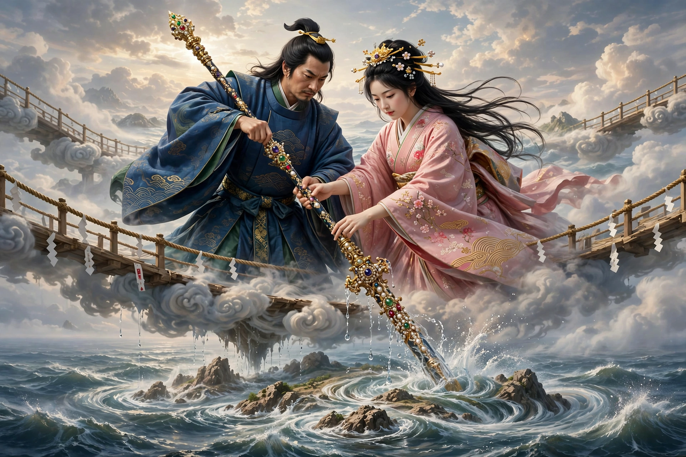

From Wikipedia, the free encyclopedia
| Izanagi-no-Mikoto | |
|---|---|
| Affiliation | Shinto; creator god (kami) |
| Spouse | Izanami |
| Children | Amaterasu, Tsukuyomi, Susanoo; the islands of Japan and many kami |
| Known for | Creating the Japanese islands with the heavenly spear; the descent to Yomi |

Izanagi (Japanese: 伊邪那岐, Izanagi-no-Mikoto) is a creator god of Shinto mythology who, with his sister-wife Izanami, created the islands of Japan and gave birth to a multitude of kami. His descent into Yomi, the land of the dead, to retrieve Izanami — and the purification in which the supreme deities Amaterasu, Tsukuyomi and Susanoo were born from his washing — form some of the most famous episodes of the Kojiki and Nihon Shoki, the eighth-century chronicles that preserve the myths.
Standing on the Floating Bridge of Heaven, Izanagi and Izanami stirred the brine of the sea with the jewelled spear Ame-no-Nuhoko; the drops falling from its tip formed the first island, Onogoro. Descending to it, they built a palace and performed the marriage rite — walking around a pillar to greet one another. Because Izanami spoke first, their first child was deformed (the leech-child Hiruko, set adrift), and after the rite was corrected they bore the islands of Japan — the "Great Eight Islands" — and many kami of wind, sea, mountains, rivers and trees.
Giving birth to the fire god Kagutsuchi, Izanami was fatally burned and died; the grieving Izanagi slew the fire god and followed his wife to Yomi to beg her return. She answered that she had eaten the food of Yomi but would consult its gods — warning him not to look upon her. Unable to wait, he lit a flame and saw her corpse rotting and crawling with maggots, guarded by the hags of Yomi. He fled in horror; she pursued him, and at the pass of Yomotsu Hirasaka he blocked the entrance with a great boulder. Across it they exchanged their divorce: Izanami vowed to strangle a thousand people each day; Izanagi answered that he would cause fifteen hundred to be born — the mythic charter of death and birth.
Polluted by contact with death, Izanagi bathed in a river in Tsukushi to purify himself: as he washed, kami of calamity and of correction arose from the filth and water, and at the last, washing his left eye, he produced Amaterasu, goddess of the sun; from his right eye, Tsukuyomi, the moon; from his nose, Susanoo, the storm. He assigned them their realms — heaven, night, and sea — and, his work complete, withdrew to his palace in Awaji, where his shrine, Izanagi Jingū, is traditionally Japan's oldest.
Shinto · Susanoo · Amaterasu · Japanese mythology · Kami · Izanami